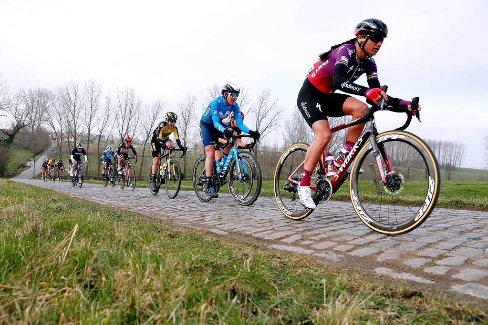
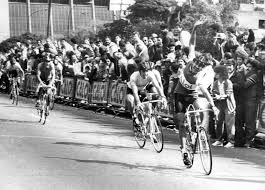
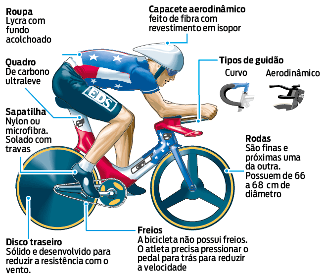
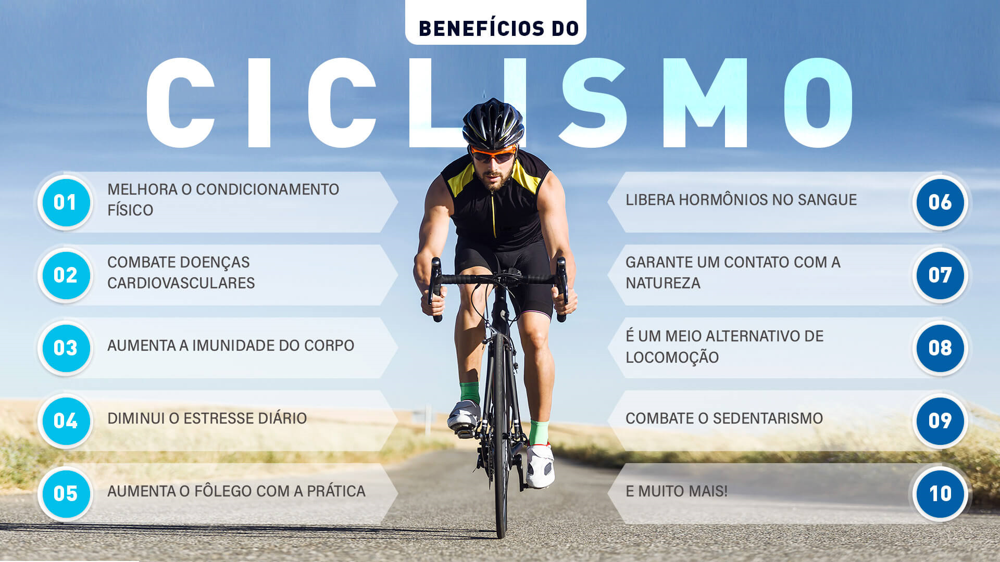
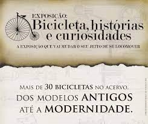

Ciclismo:
Ciclismo é um esporte praticado com uma bicicleta. O praticante desse esporte e chamado ciclista.
Em uma competição de ciclismo, o objetivo do corredor é concluir o percurso da prova antes dos demais
competidores.
Melhora a Musculatura, aumenta seu fôlego e regula a pressão arterial.

As origens do ciclismo estão ligadas ao século XIX, especificamente a década de 1890.
Afinal, foi nesse período que as bicicletas passaram por melhorias significativas, que permitiram que o
ciclismo enquanto modalidade esportiva se desenvolvesse.
A primeira competição ocorreu em 31 de maio de 1868, no Parc de Saint-Cloud, em Paris.
Está presente também desde a primeira Olimpíada da era moderna em 1896

Foto de Ciclista na primeira Olimpiada da era moderna em 1986
Regras do Ciclismo nas Olimpiadas e no Triathlon:
-
Eliminação:
O úlitmo competidor a cruzar a linha de chegada é eliminado da prova a cada duas voltas.
-
Contrarrelógio:
Vence quem termina o percurso no menor tempo. Homens percorrem 1 km, mulheres, 500 metros.
-
Flying lap ou volta lançada:
Corrida com três voltas em que vence o ciclista que fizer o menor tempo
-
Corrida de pontos:
A cada dez voltas, os ciclistas pontuam por posição. Vence quem tiver melhor pontuação ao fim de
30 km no masculino e 20 km no feminino.
-
Scratch:
Corrida de pelotão, onde quem vence é quem chega primeiro.
-
Perseguição Individual:
Dois atletas largam em posições opostas. Vence quem alcançar o outro primeiro ou fizer o melhor
tempo.

Informações Adicionais:
O ciclismo ajuda na recuperação de lesões osseas e artrite
Ajuda o COrpo a ficar preparado para outras atividades
Pedalar é um exercício que acelera o metabolismo, ou seja, a queima de calorias em seu corpo será mais
rápida. Isso evita o acúmulo de gordura no organismo.
Beneficios:
-
Tem baixo impacto nas suas Articulações.
-
Controla a glicemia no sangue.
-
Melhora a circulação sanguinea.

Curiosidades do Cilismo:
-
A bicicleta tandem mais longa, com capacidade para 35 pessoas, tinha mais de 20 metros de
comprimento.
-
O mundo fabrica cerca de 100 milhões de bicicletas a cada ano.
-
A energia e os recursos usados para a criação de um único carro podem ser usados para a criação
de até 100 bicicletas.

Foto Curiosidades do Ciclismo